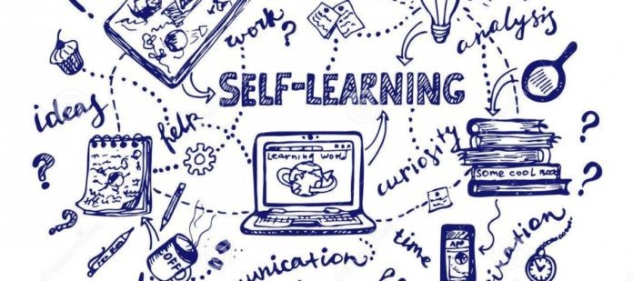

Self Learning
Introduction:
Self-learning is the process of acquiring knowledge and skills independently, without direct instruction from a teacher or formal classroom environment. It emphasizes personal initiative, where individuals take control of their educational journey by identifying their interests, setting goals, and seeking out resources to learn at their own pace.

Benifits:
- Flexibility: Learn anytime, anywhere, at your own pace.
- Personalized Learning: Tailor your education to your interests and needs.
- Enhanced Problem-Solving: Develop critical thinking and problem-solving skills by seeking out solutions independently.
- Lifelong Learning: Cultivate a habit of continuous learning, essential in adapting to new challenges.
- Cost-Effective: Often involves minimal or no costs, as many resources are available online for free.
Key Points:
- Autonomy: Self-learners take charge of their learning journey, making decisions about what, when, and how to learn.
- Resourcefulness: They use a variety of resources like books, online courses, videos, and communities to gather knowledge.
- Motivation: High intrinsic motivation is crucial, as self-learning requires discipline and perseverance.
- Technology: Digital tools and platforms play a significant role, offering access to vast amounts of information and learning communities.
- Skill Development: Beyond knowledge acquisition, self-learning fosters skills like time management, research, and self-assessment.